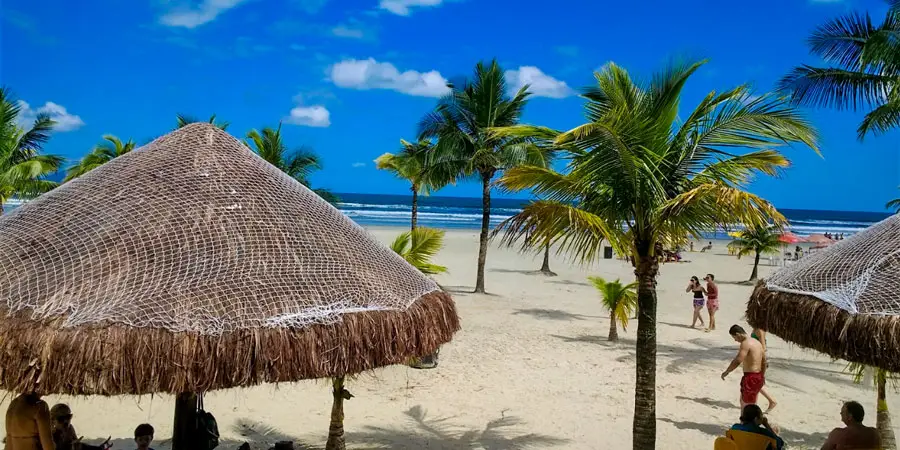
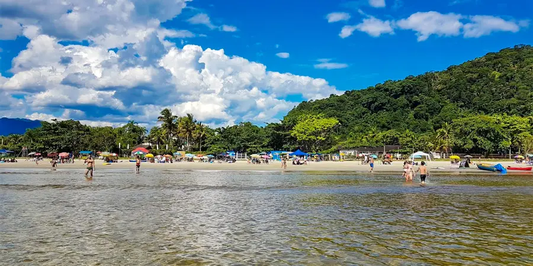

A praia possui desde bons e completos hotéis, passando por bem equipadas e charmosas pousadas e indo até chalés e pousadas baratas, para uma viagem mais econômica.
Separamos para você as principais hospedagens da Praia da Boracéia, tanto na parte que pertence a Bertioga quanto à parte de São Sebastião, conheça as selecionadas:

Boracéia é uma linda praia do Litoral Norte SP, que também conta uma boa estrutura para o turista e muitas opções de lazer.
Parte da Praia de Boracéia está situada em Bertioga, uma cidade que serve quase que como divisão entre o litoral sul e o litoral norte de São Paulo. Ali estão algumas praias excepcionais, como a Riviera de São Lourenço, Enseada, Itaguaré e outras.
Mas a Boracéia marca a divisa de Bertioga com a cidade de São Sebastião, e dessa forma a praia fica dividida entre as duas cidades do litoral norte paulista.
A praia se estende por aproximadamente 5 km em mar aberto com larga faixa de areia compacta e fina, fazendo divisa com o município de São Sebastião. Possui ondas moderadas com águas rasas, claras sendo apropriada ao banho, possui infraestrutura de quiosques e barracas com condomínios residenciais nos arredores. Sua areia é escura e compacta.